| Multiple Regression: Testing and Interpreting Interactions |
| Multiple Regression: Testing and Interpreting Interactions |
| 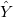 | 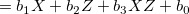 | (1.1) | ||
 |
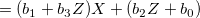 | (1.2) |
なるモデルを考える。 ただし、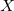と はいずれも平均でセンタリングされているものとする1。
はいずれも平均でセンタリングされているものとする1。
このとき、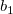はの条件付き効果（conditional effect）であり2、 が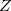におけるの単純傾斜（simple slope）である。
が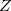におけるの単純傾斜（simple slope）である。
また、の各値における回帰直線を単純回帰直線（simple regression line）という。 Cohen & Cohen (1983) に従って、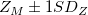から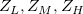を算出し、それぞれでのの単純回帰直線を求めることがしばしばある。
単純傾斜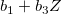のSEが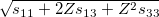であることを利用して3、
 |
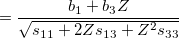 | (1.3) | ||
| 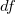 | 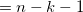 | (1.4) |
を用いて検定する4。
メモ
回帰式を
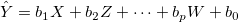 (1.5) とすると、
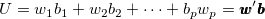 (1.6) の分散
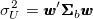 (1.7) は、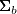の推定値
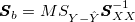 (1.8) を用いて5
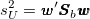 (1.9) によって推定できる6。
メモここまで
条件付き効果そのものが単純傾斜と等しくなるよう、を変換して再分析する。 はのときのの傾きなので、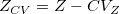と変換して分析することで、は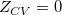つまり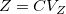の場合の単純傾斜に等しくなる7。
| 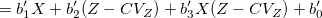 | (1.10) | |||
|
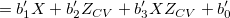 | (1.11) |
このとき、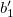はつまりのときのの条件付き効果であるが、これはつまり単純傾斜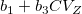に等しい。
このような処理を行えば、の検定結果がそのままの検定結果に等しいことになる。
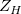と における単純傾斜の差を
における単純傾斜の差を
 |
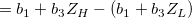 | (1.12) | ||
|
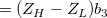 | (1.13) |
とすると、
| 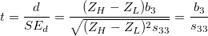 | (1.14) |
o となり、これは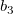の検定等計量に等しい。 つまり、が有意であれば、どのような同士の単純傾斜にも有意差があることになる。
メモ
を単にその値としてではなく、母集団平均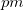母集団SDのように解釈しての単純傾斜についての検定を行っているとすると、こうした検定には正のバイアスがかかることが知られている。 これについて定まった対処法はまだない。
メモここまで
疑問
単純傾斜の検定と単純傾斜の差の検定が矛盾することはないのだろうか？ つまり、が有意でなくあらゆるにおいて単純傾斜同士は有意差なしという結果が出たときに、
疑問ここまで
交互作用は、
順 ordinal（非交差 noncrossover）交互作用：単純回帰直線がの取りうる範囲で交わらない
逆 disordinal（交差 crossover）交互作用：単純回帰直線がの取りうる範囲で交わる
に分類できる8。 この場合の「取りうる範囲」は、
実際のデータで得られた範囲
意味のある範囲
などが考えられる。
2つの単純回帰直線
| 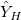 | (1.15) | |||
| 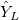 | 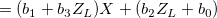 | (1.16) |
は、
| 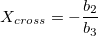 | (1.17) |
で交わる。 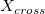がの取りうる範囲内にあれば、順（非交差）交互作用となる。
Footnotes
 は交互作用項も含む予測変数の数。
は交互作用項も含む予測変数の数。| Multiple Regression: Testing and Interpreting Interactions |